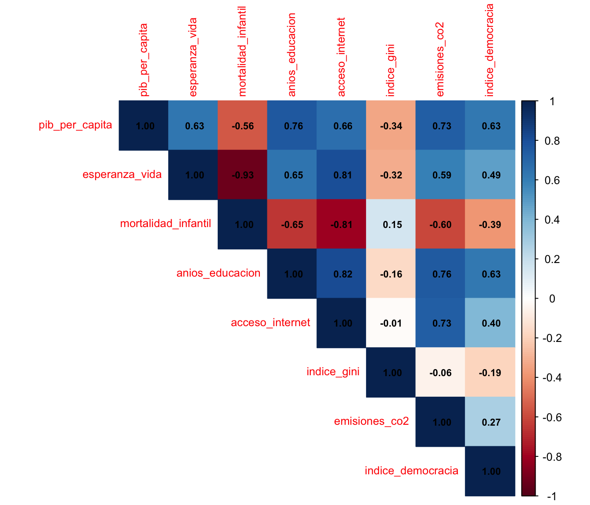
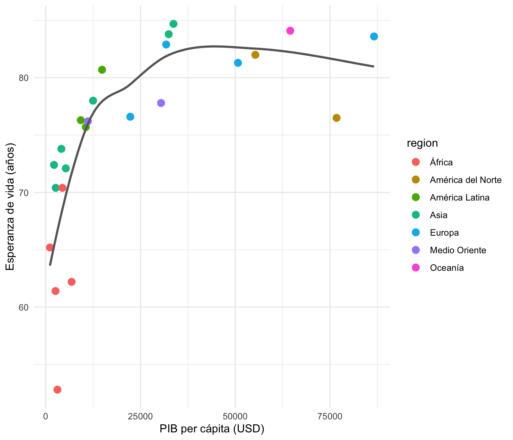
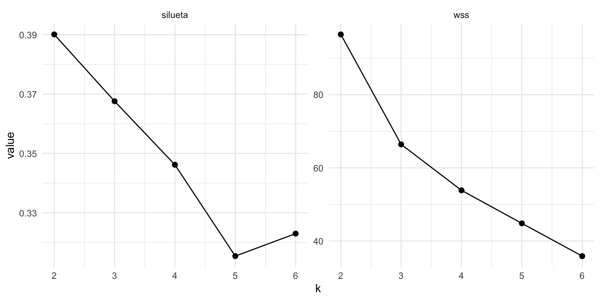

library(tidyverse)
library(cluster)
library(factoextra)
library(corrplot)
set.seed(2026)
mundo <- read_csv("datos/indicadores_mundo.csv", show_col_types = FALSE)
# Escalado reutilizado a lo largo de la tarea: sin region, pais como rownames
datos_scaled <- mundo |>
select(-region) |>
column_to_rownames("pais") |>
scale()Tarea 5: Clustering y PCA — Respuestas
IA para Científicos Sociales - UCU
1 Instrucciones
Esta es la clave de respuestas de la Tarea 5. Cada pregunta incluye el código R completo y una respuesta escrita.
1.1 Configuración
2 Exploración
2.1 Pregunta 1: Indicadores por región
mundo |>
group_by(region) |>
summarise(
paises = n(),
pib_mediano = median(pib_per_capita),
esperanza_mediana = median(esperanza_vida),
mortalidad_mediana = median(mortalidad_infantil)
) |>
arrange(desc(pib_mediano))# A tibble: 7 × 5
region paises pib_mediano esperanza_mediana mortalidad_mediana
<chr> <int> <dbl> <dbl> <dbl>
1 América del Norte 2 66022. 79.2 4.7
2 Oceanía 1 64512 84.1 2.8
3 Europa 4 41252. 82.1 2.6
4 Medio Oriente 2 20774. 77 7.1
5 América Latina 3 10566 76.3 11.7
6 Asia 7 5295 73.8 15.6
7 África 5 3086 62.2 29.1Respuesta: Ninguna región domina los tres indicadores a la vez. América del Norte tiene el PIB mediano más alto (~USD 66.000), pero su mortalidad infantil mediana (~4,7) es casi el doble que la de Europa (~2,6), arrastrada por Estados Unidos. Oceanía (que acá es sólo Australia) combina PIB alto con la mejor esperanza de vida. En el otro extremo, África queda última en los tres indicadores. El caso interesante es Medio Oriente: un PIB mediano alto (~USD 21.000, por el peso de Arabia Saudita) pero salud apenas intermedia. El ingreso y el bienestar van juntos en general, pero no son lo mismo.
2.2 Pregunta 2: ¿El PIB lo explica todo?
mundo |> slice_max(pib_per_capita, n = 5) |> select(pais, pib_per_capita)# A tibble: 5 × 2
pais pib_per_capita
<chr> <dbl>
1 Noruega 86626
2 Estados Unidos 76741
3 Australia 64512
4 Canadá 55302
5 Alemania 50722mundo |> slice_min(mortalidad_infantil, n = 5) |> select(pais, mortalidad_infantil)# A tibble: 5 × 2
pais mortalidad_infantil
<chr> <dbl>
1 Japón 1.1
2 Noruega 2.1
3 España 2.1
4 Corea del Sur 2.3
5 Australia 2.8Respuesta: Las dos listas se solapan pero no coinciden. Entre los cinco más ricos están Noruega, Estados Unidos, Australia, Canadá y Alemania; entre los cinco con menor mortalidad infantil aparecen Japón, España y Corea del Sur, que no están en el top de PIB. El caso más llamativo es Estados Unidos: segundo en PIB per cápita pero con una mortalidad infantil (~5,7 por mil) más alta que la de España o Polonia, países con la mitad o menos de su ingreso. La relación ingreso-salud es fuerte pero no determinista: la organización del sistema de salud importa, no sólo el dinero disponible.
2.3 Pregunta 3: Correlaciones
cor_matrix <- mundo |>
select(-pais, -region) |>
cor()
corrplot(cor_matrix, method = "color", type = "upper",
addCoef.col = "black", number.cex = 0.7, tl.cex = 0.8)
# Pares extremos
cor_long <- cor_matrix |>
as.data.frame() |>
rownames_to_column("v1") |>
pivot_longer(-v1, names_to = "v2", values_to = "cor") |>
filter(v1 < v2)
cor_long |> arrange(desc(cor)) |> head(3)# A tibble: 3 × 3
v1 v2 cor
<chr> <chr> <dbl>
1 acceso_internet anios_educacion 0.817
2 acceso_internet esperanza_vida 0.807
3 anios_educacion pib_per_capita 0.763cor_long |> arrange(cor) |> head(3)# A tibble: 3 × 3
v1 v2 cor
<chr> <chr> <dbl>
1 esperanza_vida mortalidad_infantil -0.928
2 acceso_internet mortalidad_infantil -0.807
3 anios_educacion mortalidad_infantil -0.654# Scatterplot PIB vs esperanza de vida
ggplot(mundo, aes(pib_per_capita, esperanza_vida)) +
geom_point(aes(color = region), size = 3) +
geom_smooth(method = "loess", se = FALSE, color = "gray40") +
labs(x = "PIB per cápita (USD)", y = "Esperanza de vida (años)") +
theme_minimal()`geom_smooth()` using formula = 'y ~ x'
Respuesta: La correlación negativa más fuerte es entre mortalidad infantil y esperanza de vida (~-0,93): son dos caras del mismo fenómeno sanitario. La positiva más fuerte es entre años de educación y acceso a internet (~0,82), seguida de internet y esperanza de vida (~0,81). El scatterplot muestra la curva clásica de Preston: la esperanza de vida sube rápido con el ingreso entre los países pobres y se aplana entre los ricos. Pasar de USD 2.000 a USD 12.000 “compra” muchos años de vida; pasar de USD 50.000 a USD 80.000 casi ninguno. La relación es fuerte pero no lineal.
3 K-means
3.1 Pregunta 4: Elegir K con codo y silueta
metricas_k <- tibble(k = 2:6) |>
mutate(
km = map(k, \(k) kmeans(datos_scaled, centers = k, nstart = 25)),
wss = map_dbl(km, \(m) m$tot.withinss),
silueta = map_dbl(km, \(m) {
mean(silhouette(m$cluster, dist(datos_scaled))[, 3])
})
)
metricas_k |> select(k, wss, silueta)# A tibble: 5 × 3
k wss silueta
<int> <dbl> <dbl>
1 2 96.5 0.390
2 3 66.4 0.368
3 4 53.8 0.346
4 5 44.8 0.315
5 6 35.9 0.323metricas_k |>
select(k, wss, silueta) |>
pivot_longer(-k) |>
ggplot(aes(k, value)) +
geom_line() +
geom_point(size = 2) +
facet_wrap(~name, scales = "free_y") +
theme_minimal()
Respuesta: Los dos criterios no gritan un único ganador. La silueta es máxima en K=2 (~0,39) pero K=3 queda muy cerca (~0,37); el codo del WSS se ve alrededor de K=3 (la caída de 2 a 3 es grande, después se suaviza). Con una diferencia de silueta tan chica, conviene decidir por interpretabilidad: K=2 sólo separa “desarrollados vs el resto”, mientras que K=3 distingue además a los países de ingreso medio de los de ingreso bajo, una distinción sustantiva real. Elegimos K=3. La lección: los criterios numéricos acotan las opciones razonables, pero la decisión final es del investigador.
3.2 Pregunta 5: ¿Geografía o nivel de ingreso?
km3 <- kmeans(datos_scaled, centers = 3, nstart = 25)
split(rownames(datos_scaled), km3$cluster)$`1`
[1] "India" "Bangladés" "Nigeria" "Kenia" "Etiopía"
$`2`
[1] "Noruega" "Alemania" "España" "Polonia"
[5] "Estados Unidos" "Canadá" "Japón" "Corea del Sur"
[9] "Australia"
$`3`
[1] "México" "Brasil" "Chile" "China"
[5] "Indonesia" "Vietnam" "Turquía" "Arabia Saudita"
[9] "Sudáfrica" "Egipto" table(cluster = km3$cluster, region = mundo$region) region
cluster África América del Norte América Latina Asia Europa Medio Oriente
1 3 0 0 2 0 0
2 0 2 0 2 4 0
3 2 0 3 3 0 2
region
cluster Oceanía
1 0
2 1
3 0Respuesta: Los clusters agrupan por nivel de desarrollo, no por geografía. Asia aparece repartida en los tres clusters: Japón y Corea del Sur caen con Europa y América del Norte; China, Indonesia y Vietnam con los países de ingreso medio; India y Bangladés con los de ingreso bajo. Lo mismo pasa con África: Sudáfrica y Egipto quedan en el cluster intermedio mientras Nigeria, Kenia y Etiopía forman parte del cluster de menor desarrollo. El algoritmo nunca vio la columna region y aun así produce grupos que cruzan continentes: la estructura de los datos es socioeconómica.
3.3 Pregunta 6: Perfil de los clusters
mundo |>
mutate(cluster = km3$cluster) |>
group_by(cluster) |>
summarise(
n = n(),
pib = round(mean(pib_per_capita)),
esperanza = round(mean(esperanza_vida), 1),
mortalidad = round(mean(mortalidad_infantil), 1),
democracia = round(mean(indice_democracia), 1)
)# A tibble: 3 × 6
cluster n pib esperanza mortalidad democracia
<int> <int> <dbl> <dbl> <dbl> <dbl>
1 1 5 2317 64.4 36.7 5.2
2 2 9 50459 81.7 2.9 8.4
3 3 10 10936 74.3 12.7 4.7Respuesta: Los tres perfiles son nítidos (los números de cluster pueden variar entre corridas, pero los grupos son los mismos). Un cluster de alto desarrollo: PIB ~USD 50.000, esperanza de vida ~82 años, mortalidad ~3 por mil y democracias consolidadas (~8,4). Un cluster de ingreso medio: PIB ~USD 11.000, esperanza ~74, mortalidad ~13, regímenes mixtos (~4,7). Y un cluster de ingreso bajo: PIB ~USD 2.000, esperanza ~64, mortalidad ~35. Etiquetas razonables: “desarrollo alto”, “ingreso medio” y “desarrollo bajo”.
4 Clustering jerárquico
4.1 Pregunta 7: Dendrograma con Ward
hc_ward <- hclust(dist(datos_scaled), method = "ward.D2")
plot(hc_ward, hang = -1, cex = 0.8,
main = "Dendrograma (Ward)", xlab = "", sub = "")
rect.hclust(hc_ward, k = 3, border = c("#2d4563", "#c0392b", "#27ae60"))
Respuesta: Los dos grandes bloques que se unen al final separan a los países de ingreso alto (de Noruega a Corea del Sur) del resto del mundo: esa es la división más profunda de los datos. Dentro de los bloques, los países más “solitarios” son Sudáfrica y Arabia Saudita, que se unen a sus grupos bastante tarde. Tiene sentido: Sudáfrica combina indicadores de ingreso medio con la desigualdad más alta del dataset (Gini ~63), y Arabia Saudita combina ingreso alto con un índice de democracia bajísimo. Son los híbridos que ningún grupo describe del todo bien.
4.2 Pregunta 8: ¿K-means y jerárquico cuentan la misma historia?
grupos_ward <- cutree(hc_ward, k = 3)
table(ward = grupos_ward, kmeans = km3$cluster) kmeans
ward 1 2 3
1 0 9 0
2 0 0 9
3 5 0 1# ¿Qué países cambian de grupo?
tibble(pais = rownames(datos_scaled),
ward = grupos_ward,
kmeans = km3$cluster) |>
count(ward, kmeans) |>
arrange(desc(n))# A tibble: 4 × 3
ward kmeans n
<int> <int> <int>
1 1 2 9
2 2 3 9
3 3 1 5
4 3 3 1Respuesta: Las dos soluciones coinciden en 23 de los 24 países. El único que cambia es Indonesia: K-means lo pone con los países de ingreso medio y Ward con los de ingreso bajo. No es preocupante, al contrario: que dos algoritmos con lógicas distintas (particional vs aglomerativo) produzcan casi la misma partición indica que la estructura de grupos es robusta. E Indonesia es exactamente el tipo de caso fronterizo (ingreso medio-bajo) donde es esperable que los métodos discrepen.
5 PCA
5.1 Pregunta 9: ¿Cuántos componentes necesitamos?
pca <- prcomp(datos_scaled)
summary(pca)Importance of components:
PC1 PC2 PC3 PC4 PC5 PC6 PC7
Standard deviation 2.2268 1.0540 0.9005 0.79372 0.48041 0.38454 0.29383
Proportion of Variance 0.6199 0.1389 0.1013 0.07875 0.02885 0.01848 0.01079
Cumulative Proportion 0.6199 0.7587 0.8601 0.93881 0.96766 0.98615 0.99694
PC8
Standard deviation 0.15651
Proportion of Variance 0.00306
Cumulative Proportion 1.00000Respuesta: PC1 solo captura ~62% de la varianza total: una sola dimensión resume casi dos tercios de la información de ocho variables. PC2 agrega ~14% (acumulado ~76%) y PC3 ~10% (acumulado ~86%). Hacen falta tres componentes para superar el 80% de la varianza acumulada. Aun así, para visualizar en dos dimensiones, PC1 y PC2 con tres cuartos de la varianza son una síntesis muy razonable.
5.2 Pregunta 10: Interpretar PC1 y PC2
round(pca$rotation[, 1:2], 2) PC1 PC2
pib_per_capita -0.38 -0.20
esperanza_vida -0.40 -0.04
mortalidad_infantil 0.38 -0.14
anios_educacion -0.40 0.05
acceso_internet -0.40 0.29
indice_gini 0.12 0.83
emisiones_co2 -0.36 0.25
indice_democracia -0.28 -0.31Respuesta: En PC1, esperanza de vida, años de educación, acceso a internet, PIB y emisiones cargan todas con el mismo signo (~±0,4), y la mortalidad infantil carga con el signo opuesto. Es el eje clásico de desarrollo socioeconómico (el signo concreto es arbitrario; lo que importa es la oposición). Noten que las emisiones de CO2 cargan del lado “desarrollado”: los países ricos contaminan más per cápita. En PC2 domina por lejos el índice de Gini (~0,83), con la democracia cargando en sentido contrario: es un eje de desigualdad, casi independiente del nivel de desarrollo. PC1 = “desarrollo”, PC2 = “desigualdad” son nombres defendibles con estos loadings.
5.3 Pregunta 11: Países extremos
scores <- as_tibble(pca$x[, 1:2], rownames = "pais")
scores |> arrange(PC1) |> slice(c(1:3, 22:24))# A tibble: 6 × 3
pais PC1 PC2
<chr> <dbl> <dbl>
1 Noruega -3.07 -1.57
2 Australia -3.00 -0.248
3 Canadá -2.78 -0.344
4 Kenia 3.17 -0.384
5 Etiopía 3.98 -1.03
6 Nigeria 4.46 -1.01 scores |> arrange(PC2) |> slice(c(1:3, 22:24))# A tibble: 6 × 3
pais PC1 PC2
<chr> <dbl> <dbl>
1 Noruega -3.07 -1.57
2 Bangladés 2.01 -1.06
3 Etiopía 3.98 -1.03
4 Brasil 0.732 1.44
5 Arabia Saudita -1.24 2.19
6 Sudáfrica 1.27 2.59Respuesta: En PC1 los extremos son Noruega, Australia y Canadá de un lado y Nigeria, Etiopía y Kenia del otro: exactamente lo que esperamos de un eje de desarrollo. En PC2 los extremos confirman la lectura de “desigualdad”: en un polo están Sudáfrica, Arabia Saudita y Brasil (los Gini más altos del dataset, más el caso saudí de baja democracia), y en el otro Noruega, un país rico e igualitario. Que Brasil y Sudáfrica estén lejos de Etiopía en PC2 pero no tanto en PC1 muestra que las dos dimensiones capturan cosas distintas.
6 Síntesis
6.1 Pregunta 12: ¿Qué pasa si no escalamos?
datos_raw <- mundo |>
select(-region) |>
column_to_rownames("pais")
# Varianza de cada variable sin escalar
sort(apply(datos_raw, 2, var), decreasing = TRUE) |> head(3) pib_per_capita acceso_internet mortalidad_infantil
6.463392e+08 5.537777e+02 2.461872e+02 km3_raw <- kmeans(datos_raw, centers = 3, nstart = 25)
split(mundo$pais, km3_raw$cluster)$`1`
[1] "México" "Brasil" "Chile" "China" "India" "Indonesia"
[7] "Vietnam" "Bangladés" "Turquía" "Sudáfrica" "Nigeria" "Kenia"
[13] "Egipto" "Etiopía"
$`2`
[1] "Noruega" "Alemania" "Estados Unidos" "Canadá"
[5] "Australia"
$`3`
[1] "España" "Polonia" "Japón" "Corea del Sur"
[5] "Arabia Saudita"table(escalado = km3$cluster, sin_escalar = km3_raw$cluster) sin_escalar
escalado 1 2 3
1 5 0 0
2 0 5 4
3 9 0 1Respuesta: Sin escalar, la solución la dicta el PIB per cápita, cuya varianza (del orden de 108) es millones de veces mayor que la de las demás variables. Los “clusters” pasan a ser bandas de ingreso puras: un grupo de PIB altísimo, otro de PIB medio y otro con todo el resto. El caso revelador es Arabia Saudita, que queda agrupada con España, Polonia, Japón y Corea del Sur sólo porque su PIB es parecido, aunque su índice de democracia (~2) y su perfil social sean completamente distintos. La mortalidad infantil, el Gini y la democracia se vuelven irrelevantes para la distancia. Por eso escalar no es un detalle técnico: define qué pregunta le estamos haciendo a los datos.
6.2 Pregunta 13: Reflexión
Respuesta:
- Para un periodista, el gráfico de clusters sobre los dos primeros componentes (estilo
fviz_cluster()) es la mejor opción: muestra los grupos, la posición relativa de cada país y los casos fronterizos en una sola imagen intuitiva (“mapa de países”). El dendrograma exige explicar qué significa la altura de las uniones, y el biplot agrega flechas de loadings que confunden a un público no técnico - Los promedios nacionales esconden la desigualdad interna. Brasil o Sudáfrica tienen ingresos medios “intermedios”, pero conviven regiones con indicadores de país rico y otras con indicadores de país pobre; el “país promedio” no describe bien a casi nadie. Lo mismo vale para brechas urbano-rurales o étnicas
- Hay varias respuestas defendibles. Algunos ejemplos: la informalidad laboral o la calidad institucional (corrupción) distinguirían a los ingresos medios entre sí, porque es donde más varían; una medida de dependencia de materias primas separaría a los exportadores de petróleo (Arabia Saudita) de los manufactureros (Corea del Sur, en su momento). Lo importante es justificar que la variable nueva varíe justamente donde el dataset actual no discrimina